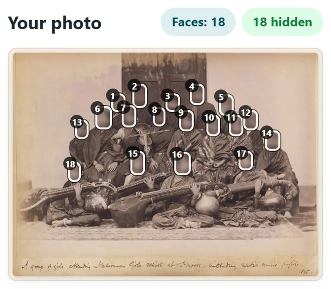

ફોટો શેર કરતાં પહેલાં તેમાં ચહેરા કેવી રીતે બ્લર કરવા
વર્ગનો ફોટો, ઓફિસનો કાર્યક્રમ, દુકાનમાં ઊભેલો ગ્રાહક: ફોટો કોઈ ગ્રુપ કે સોશિયલ મીડિયા પર જાય તે પહેલાં જેમણે હા નથી પાડી તેમને ઢાંકી દો. આમાં એક મિનિટ લાગે છે અને ફોટો તમારા ફોનની બહાર જતો નથી.
ટૂંકો જવાબ
ચહેરો બ્લર: સુરક્ષિત શેરિંગ ખોલો અને “ફોટો પસંદ કરો” દબાવો. AI ચહેરા શોધીને ઢાંકી દે છે. કોઈ ચહેરો ફરી બતાવવો હોય તો તેના બોક્સ પર ટેપ કરો, નંબર પ્લેટ અને નામના બેજ માટે “ખાનું દોરો” વાપરો, ઢાંકવાની રીત પસંદ કરો (“કાળું ખાનું” અને “ઇમોજી” સૌથી સારું ઢાંકે છે) અને “JPG તરીકે સેવ કરો” દબાવો. સેવ કરેલા ફોટોમાં GPS લોકેશન હોતું નથી.
5 પગલાંમાં ચહેરા ઢાંકો
-
ફોટો પસંદ કરો
ચહેરો બ્લર: સુરક્ષિત શેરિંગ ખોલો અને “ફોટો પસંદ કરો” દબાવો, અથવા તે કેવી રીતે ચાલે છે તે જોવા “નમૂનો ફોટો જુઓ” દબાવો. પહેલી વાર ચહેરા શોધતું AI એક વાર ડાઉનલોડ થાય છે (Wi-Fi વધારે સારું).
-
દરેક ચહેરો તપાસો
મળેલા ચહેરા આપમેળે ઢંકાઈ જાય છે. કોઈનો ચહેરો ફરી બતાવવો હોય, જેમ કે જેણે હા પાડી છે, તો તેના બોક્સ પર ટેપ કરો; ફરી ટેપ કરવાથી તે ઢંકાઈ જશે. પાછળના નાના ચહેરા રહી ગયા હોય તો “નાના ચહેરા ધ્યાનથી શોધો” દબાવો.

ચહેરા મળ્યા અને ઢંકાઈ ગયા. બતાવવા કે ઢાંકવા બોક્સ પર ટેપ કરો. -
બીજી ખાનગી વિગતો પણ ઢાંકો
“ખાનું દોરો” દબાવો અને નંબર પ્લેટ, ઘર નંબર, નામના બેજ, ID કાર્ડ અને સ્ક્રીન પર આંગળી ખેંચીને બોક્સ દોરો.
-
ઢાંકવાની રીત પસંદ કરો
“ઝાંખું”, “પિક્સેલ”, “કાળું ખાનું” અથવા “ઇમોજી” પસંદ કરો અને તીવ્રતા નક્કી કરો. કાળું બોક્સ કે ઇમોજી સૌથી સારું ઢાંકે છે; હળવા બ્લરમાં ચહેરો ક્યારેક તો પણ ઓળખાઈ શકે.

ઢાંકવાની રીત પસંદ કરો: બ્લર, પિક્સેલ, કાળું બોક્સ કે ઇમોજી. -
લોકેશન તપાસો અને સેવ કરો
“લોકેશન તપાસ” જણાવે છે કે મૂળ ફાઇલની અંદર GPS લોકેશન છે કે નહીં. “JPG તરીકે સેવ કરો” અથવા “PNG તરીકે સેવ કરો” દબાવો: સેવ કરેલો ફોટો નવેસરથી દોરાય છે, એટલે તેમાં લોકેશન અને કેમેરાની વિગતો હોતી નથી. શેર કરતાં પહેલાં ઝૂમ કરીને ફરી એક વાર તપાસો.
શેર કરતાં પહેલાં: જાણવા જેવું
- કેમેરા તરફ જોતા મોટા ભાગના ચહેરા AI ને મળી જાય છે. ફરેલા, ઢંકાયેલા કે બહુ નાના ચહેરા રહી જઈ શકે, એટલે હંમેશાં તપાસો અને હાથે બોક્સ ઉમેરો.
- પહેલાં પૂછો. ભારતના ડિજિટલ પર્સનલ ડેટા પ્રોટેક્શન એક્ટ, 2023 મુજબ જે ફોટોથી કોઈની ઓળખ થાય તે તેનો અંગત ડેટા છે. બાળકો માટે માતા-પિતાને પૂછો.
- યુનિફોર્મ, શાળાનું નામ, સાઇનબોર્ડ કે ઘર નંબરથી પણ અજાણી વ્યક્તિ જાણી શકે કે બાળક ક્યાં ભણે છે કે રહે છે. તે પણ ઢાંકો.
- મૂળ ફાઇલ નહીં, સેવ કરેલી નકલ શેર કરો. ફોટોનું આખું બેકગ્રાઉન્ડ દૂર કરવું હોય તો AI બૅકગ્રાઉન્ડ રિમૂવર વાપરો.
નવાં મફત ટૂલ અને હિન્દીમાં AIના પાઠ મેળવો
અમારી ઇમેઇલ યાદીમાં જોડાઓ: નવી મફત ઍપ્સ, નવી માર્ગદર્શિકાઓ અને AI પર હિન્દી વીડિયો પાઠની માહિતી તમને મળતી રહેશે. કોઈ સ્પૅમ નહીં.
ફક્ત પુખ્ત વયના લોકો (18+) માટે. તમે ગમે ત્યારે નામ કઢાવી શકો છો.
અમે આ ટૂલ કેમ સૂચવીએ છીએ
- બધા માટે મફત: જાહેરાત નહીં, સાઇન-અપ નહીં, પેઇડ પ્લાન નહીં.
- ખાનગી: તમારી ફાઇલો અને માહિતી તમારા પોતાના ડિવાઇસ પર જ રહે છે.
- ફોન, લૅપટૉપ કે સ્માર્ટબોર્ડ પર ચાલે છે, અને એક વાર ખૂલ્યા પછી ઇન્ટરનેટ વગર પણ.
- ગુજરાતી અને હિન્દી સહિત 12 ભાષાઓમાં.
વીડિયોથી શીખવું ગમે છે? અમારી YouTube ચૅનલ પર AI અને મફત ટૂલના હિન્દી પાઠ જુઓ.
વારંવાર પૂછાતા પ્રશ્નો
શું મારો ફોટો અપલોડ થાય છે?
ના. ફક્ત ચહેરા શોધતું AI તમારા ડિવાઇસ પર ડાઉનલોડ થાય છે, તે પણ એક વાર. ફોટો તમારા ફોન કે કમ્પ્યુટરની બહાર જતો નથી.
શું પછીથી કોઈ બ્લર દૂર કરી શકે?
સેવ કરેલો ફોટો એક નવું ચિત્ર છે: મૂળ ચિત્ર તેની અંદર છુપાયેલું નથી. કાળું બોક્સ કે ઇમોજી પાછું હટાવી શકાતું નથી. હળવા બ્લરમાં ચહેરો ક્યારેક ઓળખાઈ શકે, એટલે તીવ્રતા વધારે રાખો.
શું આ ફોટોમાંથી લોકેશન દૂર કરે છે?
હા. અહીં સેવ કરેલા ફોટોમાં GPS લોકેશન, કેમેરાની વિગતો કે બીજો છુપાયેલો ડેટા હોતો નથી. તમારી મૂળ ફાઇલમાં લોકેશન હતું કે નહીં, તે પણ એપ બતાવે છે.
શું નંબર પ્લેટ કે નામ ઢાંકી શકાય?
હા, હાથે: “ખાનું દોરો” દબાવો અને તેના પર બોક્સ ખેંચો. AI ફક્ત ચહેરા શોધે છે.
શું આ ગ્રુપ ફોટોમાં ચાલે છે?
હા. તે નાના ચહેરા પણ શોધે છે, અને “નાના ચહેરા ધ્યાનથી શોધો” ફરી શોધે છે. મોટા ગ્રુપમાં પાછળની હરોળ જાતે તપાસો.
ઉપયોગી લાગી?
કોઈ મિત્ર, સહકર્મીઓ કે તમારી શાળાના WhatsApp ગ્રુપમાં મોકલો.